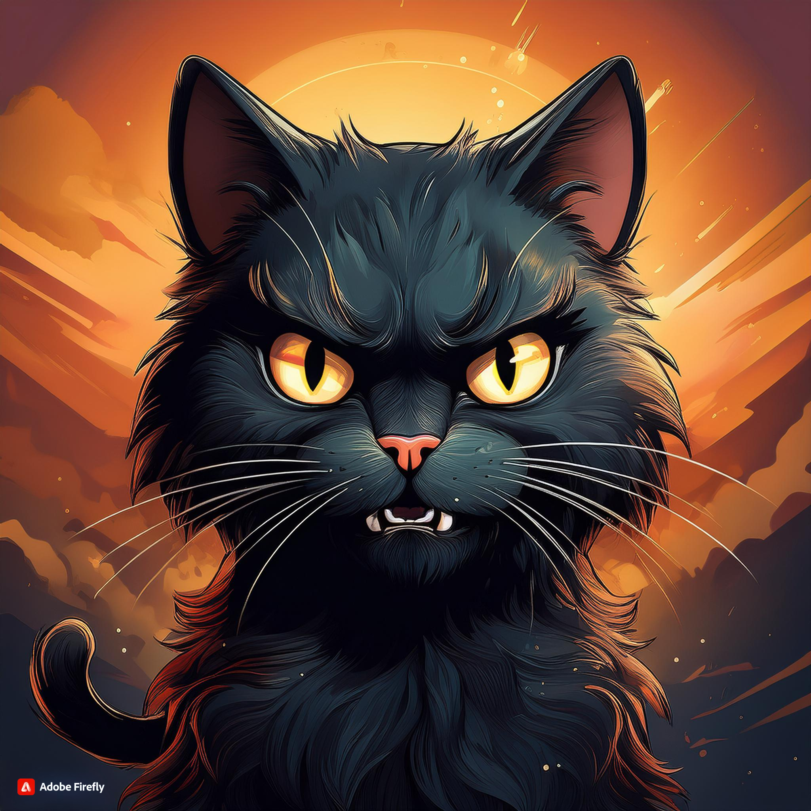

Andreas sin html-side
Da jeg skulle på butikken her en dag,
møtte jeg på en svart katt . Jeg fikk øyekontakt med den og ba til høyere makter om at
den ikke skulle krysse vegen. Den så på meg og smilte.

Jeg kjente tårene komme
idet den svarte katten begynte å gå. Før jeg fikk reagere, var det for sent. Veien hadde blitt
krysset og uflaksen fløy inn i neseborene. Veien videre til butikken var skummel, og
jeg var oppmerksom på hvert uhel som kunne skje.
Jeg kom hjem, bestemte jeg meg for
å lage meg litt pasta. Matlagingen gikk strålende, og jeg var klar til å helle ut vannet
i fra gryta. Jeg la silen i vasken, løftet gryten, og gikk mot vasken. Idet jeg helte, mistet
jeg grepet.. og pastaen… den endte oppi vasken. Poker ta deg svarte katt